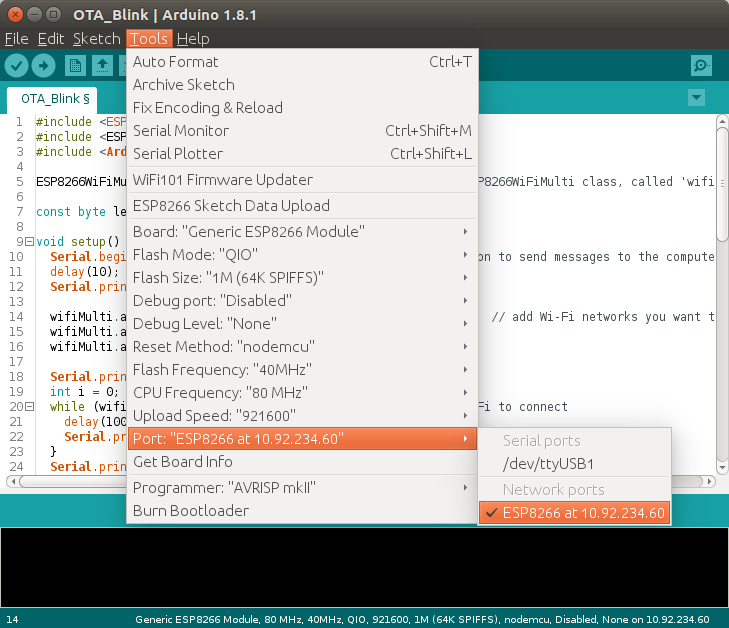

Over The Air Updates
Uploading over Serial is fine during development, when you have access to the Serial pins and the USB port. But once your project is finished, and you put it inside an enclosure, it not that easy to upload updates with bug fixes or new features.
A solution to this problem is Over The Air updating, or OTA for short. As the name implies, this technology allows you to upload new code over Wi-Fi, instead of Serial.
The only disadvantage is that you have to explicitly add the code for it to every sketch you upload. You also need a flash chip that is twice the size of your sketch, so it won't work for 512kB boards. (It has to download the new sketch while still running the old code.)
Let's take a look at an example ...
Blink OTA
The following example is basically Blink Without Delay, but with the necessary OTA and Wi-Fi code added as well.
#include <ESP8266WiFi.h>
#include <ESP8266WiFiMulti.h>
#include <ArduinoOTA.h>
ESP8266WiFiMulti wifiMulti; // Create an instance of the ESP8266WiFiMulti class, called 'wifiMulti'
const byte led = 13;
void setup() {
Serial.begin(115200); // Start the Serial communication to send messages to the computer
delay(10);
Serial.println('\n');
wifiMulti.addAP("ssid_from_AP_1", "your_password_for_AP_1"); // add Wi-Fi networks you want to connect to
wifiMulti.addAP("ssid_from_AP_2", "your_password_for_AP_2");
wifiMulti.addAP("ssid_from_AP_3", "your_password_for_AP_3");
Serial.println("Connecting ...");
int i = 0;
while (wifiMulti.run() != WL_CONNECTED) { // Wait for the Wi-Fi to connect
delay(250);
Serial.print('.');
}
Serial.println('\n');
Serial.print("Connected to ");
Serial.println(WiFi.SSID()); // Tell us what network we're connected to
Serial.print("IP address:\t");
Serial.println(WiFi.localIP()); // Send the IP address of the ESP8266 to the computer
ArduinoOTA.setHostname("ESP8266");
ArduinoOTA.setPassword("esp8266");
ArduinoOTA.onStart([]() {
Serial.println("Start");
});
ArduinoOTA.onEnd([]() {
Serial.println("\nEnd");
});
ArduinoOTA.onProgress([](unsigned int progress, unsigned int total) {
Serial.printf("Progress: %u%%\r", (progress / (total / 100)));
});
ArduinoOTA.onError([](ota_error_t error) {
Serial.printf("Error[%u]: ", error);
if (error == OTA_AUTH_ERROR) Serial.println("Auth Failed");
else if (error == OTA_BEGIN_ERROR) Serial.println("Begin Failed");
else if (error == OTA_CONNECT_ERROR) Serial.println("Connect Failed");
else if (error == OTA_RECEIVE_ERROR) Serial.println("Receive Failed");
else if (error == OTA_END_ERROR) Serial.println("End Failed");
});
ArduinoOTA.begin();
Serial.println("OTA ready");
pinMode(led, OUTPUT);
digitalWrite(led, 1);
}
unsigned long previousTime = millis();
const unsigned long interval = 1000;
void loop() {
ArduinoOTA.handle();
unsigned long diff = millis() - previousTime;
if(diff > interval) {
digitalWrite(led, !digitalRead(led)); // Change the state of the LED
previousTime += diff;
}
}
Add your Wi-Fi credentials, and upload the sketch over Serial. Connect an LED (+ resistor) to pin 13. Then restart the IDE (you have to close all windows). Go to Tools > Port, and you should get a new option: Network Ports: ESP8266 at 192.168.1.x. Select it.

Next, change the interval on line 59 from 1000 to 500 milliseconds, and click upload. You should get a password prompt: enter "esp8266". This password is set on line 31, so you can change it if you want to. You can also delete line 31 altogether to use it without a password, but it's not recommended - for obvious security reasons.
The sketch should upload just fine, and once the ESP has reset itself, the LED should blink twice as fast.
Once in a while, you might get an error saying
[ERROR]: No Answer
. If this happens, just enter the password, and try again.
Serial Monitor OTA
Using the Serial Monitor over Wi-Fi is not possible (yet?). When you try to open it, you'll be prompted a password, entering the password won't work, because there is no SSH support to access the ESP's console.
You can use a different program to get debug output from the physical Serial port. On Windows, you can try
Portmon. On Linux, you can try GTKTerm (
sudo apt-get install gtkterm
) or Screen (
sudo apt-get install screen
to install, and
screen /dev/ttyUSB0 115200
or
screen /dev/ttyACM0 115200
to run;
CTRL+A, CTRL+D
to exit).
{kind=link}